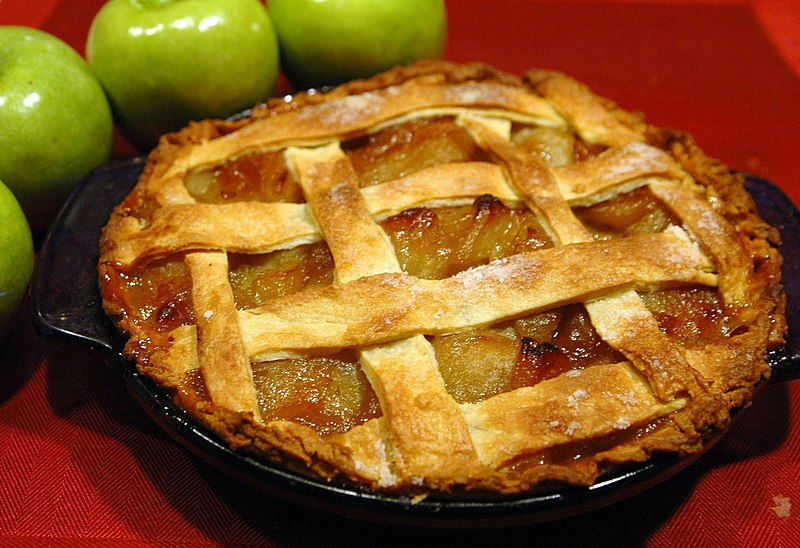

Image by: Wikimedia Commons
Ingredients
Pie Dough
- 2 ½ cups flour
- 1 teaspoon salt
- 1 ½ sticks cold butter, cubed
- 8 tablespoons ice water, or as needed
Filling
- 2 ½ lbs Granny Smith apples, peeled, cored, and sliced
- ¾ cup sugar
- 2 tablespoons flour
- ½ teaspoon salt
- 1 teaspoon cinnamon
- ¼ teaspoon nutmeg
- Juice from ½ lemon
- 1 egg, beaten
- 1 tablespoon sugar
Topping
- 1 scoop vanilla ice cream (optional)
Equipment
- Pie dish
- Mixing bowl
- Rolling pin
- Measuring cups and spoons
Directions
- In a medium-sized bowl, add flour and salt, and mix with a fork.
- Mix in cold, cubed butter with the fork until the mixture resembles small peas.
- Gradually add ice water until dough starts to come together. Knead into a ball and refrigerate.
- In a bowl, combine the apple slices with sugar, flour, salt, cinnamon, nutmeg, and lemon juice. Refrigerate.
- Preheat the oven to 375°F (200°C).
- Roll out the pie dough and line a pie dish with one half. Fill with the apple mixture.
- Cover the pie with the second half of the dough, crimp the edges, and brush with beaten egg and sugar.
- Cut slits into the top of the pie for ventilation and bake for 50-60 minutes until golden brown.
- Let the pie cool before slicing and serve with vanilla ice cream if desired.